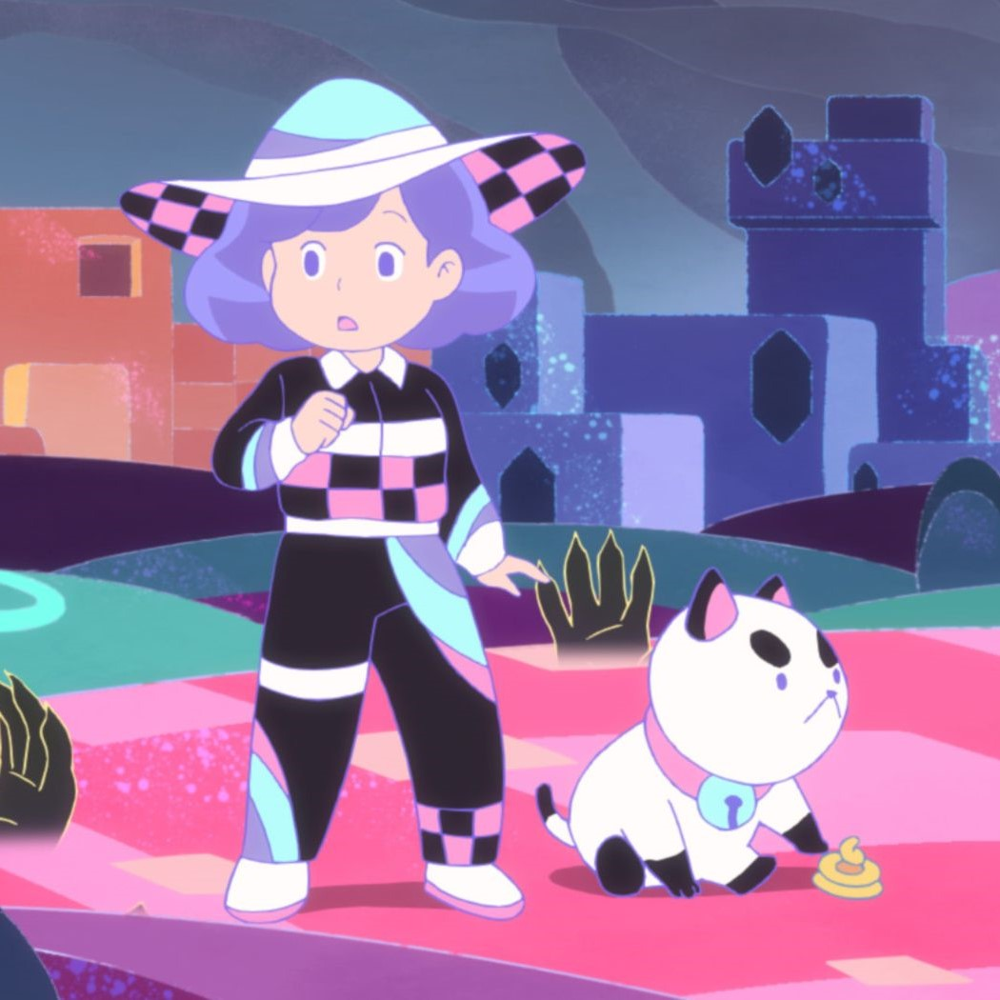
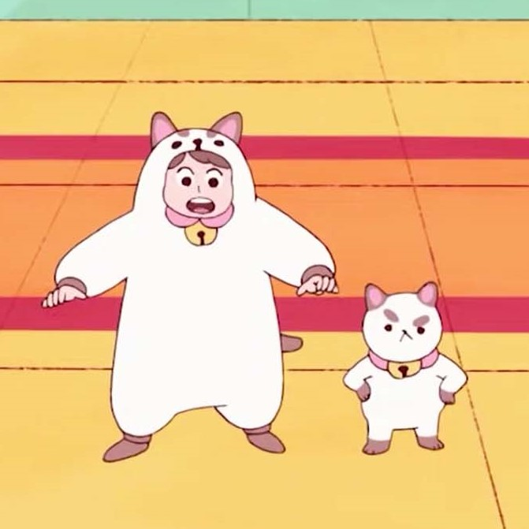
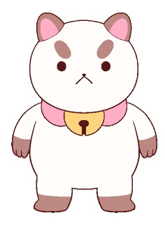

<!DOCTYPE html>
<html lang="en"></html>

<!-- Head section contains metadata (not displayed on page) -->
<head>
    <!-- Title displayed in the browser tab -->
    <title>Bee and PuppyCat Island</title>
    <!-- link css -->
    <link rel="stylesheet" href="styles/main.css">
</head>


<!-- Top header of the website -->
<header>
    <!-- image at the top of page -->
    <div class="banner">
        
        
    </div>
    <!-- title of webpage -->
    <div>
        <h1 class="pagetitle">All About Bee and Puppycat</h1>
        <h2 class="subtitle">And Why You Should Watch It</h2>
    </div>
    <br>
<!-- small images after titles to provide structure-->
    <div class="snapshots">
        
        
        
    </div>

</header>


<!-- Actual content of the website -->
<body>
    <!-- Initial paragraph explaining why you should watch bee and puppycat -->
    <div class="section1">
        <h1 class="heading"> What is Bee and Puppycat About?</h1>
        <p class="p1"> Bee is a twenty-something year old woman who recently was fired from her job. She was living a somewhat normal life until her grumpy
        companion Puppycat arrives in her life unexpectedly. Bee names him Puppycat because he looks like a cat and smells like a dog. There adventured begin with travelling between reality and "Fishbowl Space". I promise the show is way more intriguing than that over simplified summary okay? The show gives cute, chill, and sometimes funny vibes. You'll love it!
        </p>
        <figure>
            
            <figcaption>Genderbent Bee from one of the Fishbowl Space Adventures.</figcaption><br>
        </figure>
    </div>

    <div class="section2">
        <h2 class="subtitle">Where did Bee and Puppycat Come From?</h2>
        <p class="p2"><strong>I'm so glad you asked!</strong> Bee and Puppycat is a show you might have come across on Netflix. It was recently released on Netflix, but the story of this show has a longer history than you think! This animated series was on Cartoon Hangover, a television channel essentially, that was created by the goddess herself Natasha Allegri and produced by Frederator Studios. You might be familiar with this animation company because they produced popular shows such as The Fairly OddParents and Adventure Time. Two shorts were released on Youtube in 2013 and Bee and Puppycat was born. The show started to become popular which led to the creation of the comic book adaptation of the show for about 2 years. The support for the show was so overwhelming that the fans contributed to the Kickstarter campaign to make the show into a full series. As a result, 10 episodes were released on Youtube, which are still there today, and are considered Bee and Puppycat's first full season.
        </p>
        <figure>
            
            <figcaption>The first episode where Bee meets Puppycat after getting fired.</figcaption><br>
        </figure>
    </div>
        
    <div class="section3">
        <h2 class="subtitle">So what now?</h2>
        <p class="p3">Well, a second season of <em>Bee and Puppycat: Lazy in Space</em> was created and was supposed to be released on another streaming platform but because of delays it was never released and leaked online. I didn't find the online leak <strong>(wink wink)</strong>. The second season was just drifting until Netflix picked it up, re-adapted the pilot and the first season, which was terrible, and attatched the Lazy in Space original episodes. I can only hope Netlix doesn't destory my favorite show and that the fans are able to bully these big companies to ensure the show's safety.
        </p>
        <figure>
            
            <figcaption>Bee holding Puppycat, both with shocked and distrubed expressions. Why? You'll have to watch to find out!
            </figcaption><br>  
        </figure>
    </div>

    <!-- cahracter section with a grid -->
    <h1 class="heading">Get To Know Your New Favorite Characters!</h1>
    
    <div class="grid-container">
        <div class="grid-item bee">Bee
            
        </div>
        <div class="grid-item">Puppycat
            
        </div>
        <div class="grid-item card">Cardamon
            
        </div>
        <div class="grid-item">Deckard
            
        </div>
        <div class="grid-item">Cass
            
        </div>
        <div class="grid-item">Toast
            
        </div>
        <div class="grid-item">Temp-bot
            
        </div>
        <div class="grid-item">Moully
            
        </div>
    </div>

</body>